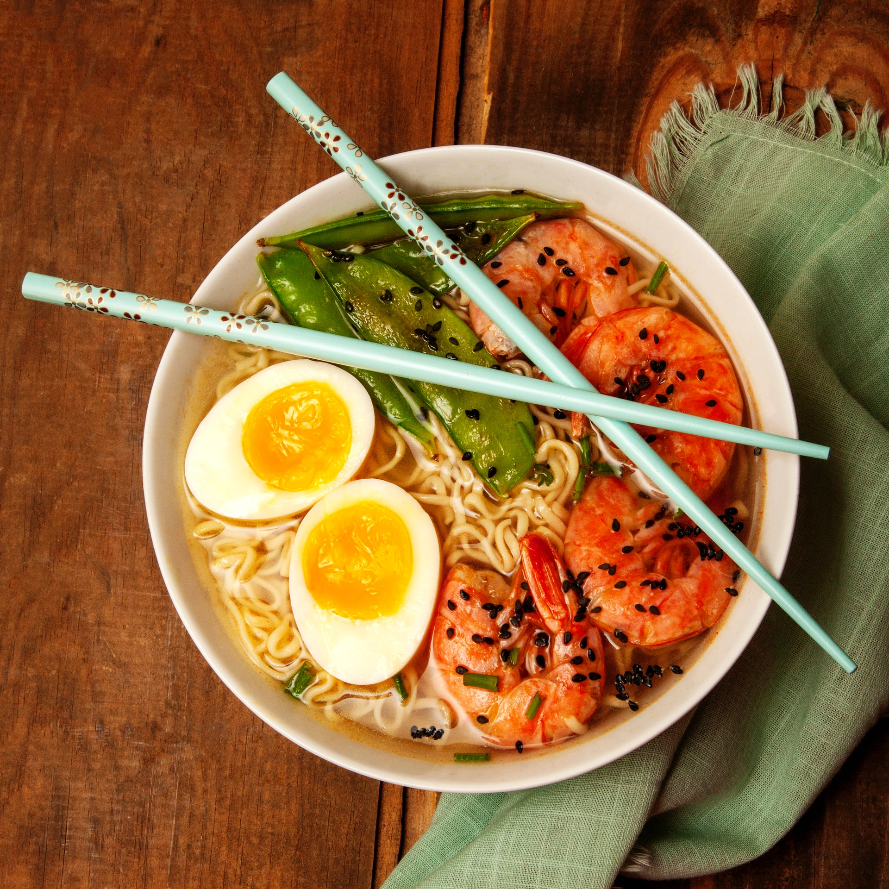

person_outline
calendar_today
Chân gà làm gì ngon? Tổng hợp 30+ món ngon từ chân gà siêu hấp dẫn
Tham Nguyen
14/3/2022
Chân gà từ lâu đã là món ăn ưa chuộng của nhiều người. Với cách chế biến đa dạng, có thể tùy chỉnh biến tấu cho ra các món ăn thơm ngon, hấp dẫn, càng ăn càng ghiền. Cộng với độ giòn ngon của chân gà tạo nên nét đặc biệt cho nguyên liệu dân dã này. Vậy, chân gà làm gì ngon? Cùng Barona theo dõi bài viết sau đây để xem cách làm những món ngon từ chân gà nhé!
Mục lục
{{item.name}}